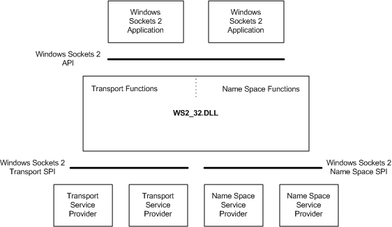

The Windows Sockets 2 architecture is compliant with the Windows Open System Architecture (WOSA), as illustrated below:

Winsock defines a standard service provider interface (SPI) between the application programming interface (API), with its functions exported from WS2_32.dll and the protocol stacks. Consequently, Winsock support is not limited to TCP/IP protocol stacks as is the case for Windows Sockets 1.1.
With the Windows Sockets 2 architecture, it is not necessary or desirable, for stack vendors to supply their own implementation of WS2_32.dll, since a single WS2_32.dll must work across all stacks. The WS2_32.dll and compatibility shims should be viewed in the same way as an operating system component.
Â
Â